What a student does
Today: one card, about three minutes
Every day starts with a single card. Students rate how they did on each IEP goal from 1 to 6, with descriptions written for that goal in their own words, then write a specific plan for the period and answer “Do I need help?” One Done button sends it all.
- “I didn’t have a chance to work on this goal” is an honest answer, with a reason
- Periods 1–4 rate yesterday, periods 5–8 rate today, using the school calendar
- A help request goes straight to the teacher’s “Needs my attention” list
- Then the checklist and exit ticket, as big numbered steps; everything else waits in small “My stuff” tiles
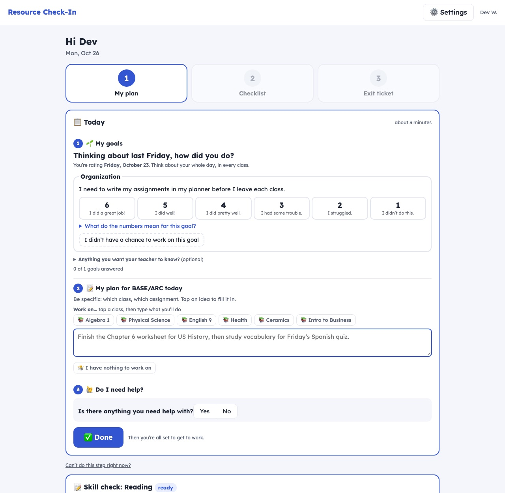
One small extra a day, never a pile
Some questions come weekly or every two weeks: a skill check, “Which accommodations did you use this week?”, “Would an accommodation help after that low score?”, college and career exploring. They take turns, so a student never gets more than one extra on a day, and none on grade check day.
- The weekly accommodation question is three rows of taps: which one, which class, what for. One time is one entry, and it only counts when they used it and the rest of the class didn’t (a calculator everyone used isn’t an accommodation).
- Every answer counts toward the student’s accommodation data
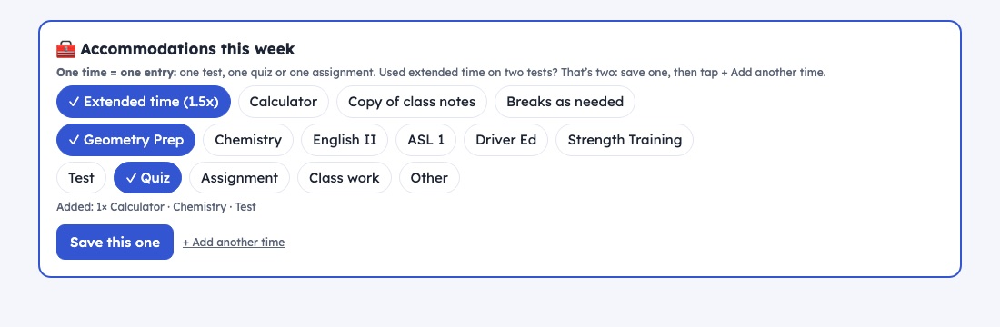
Skill checks that find their level
Every two weeks, a short check on a student’s academic IEP goal. Math comes one question at a time: a right answer makes the next one harder, a wrong one makes it easier, across six levels from everyday money and fractions up to precalculus. Each answer shows the right one and why.
- The first check starts from the student’s math course (Prep, co-taught or special education) or their grade
- The teacher sees the level over time: “Math level 4 of 6 (Geometry), 3 → 4 → 5”
- Reading and writing checks too, scored on the server so the answers never reach the page early
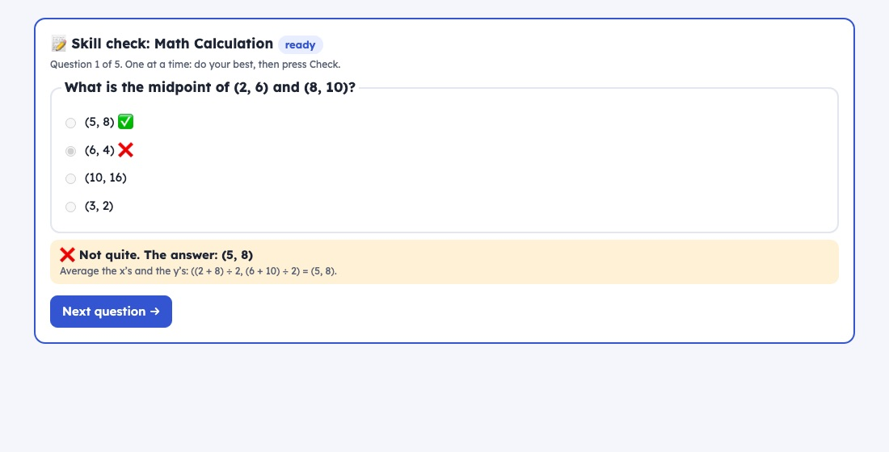
🧰 My tools: the rest of the period
After Today, the Chromebook can sit on My tools. It starts with what’s coming up and one suggestion of where to start, then everything a student needs to get work done.
- My assignments, missing work (“I turned it in”), and an Assignment Decoder that turns directions into what it needs, how it’s graded and a plan
- ❓ Questions for my teacher, with a reminder when that class’s bell rings
- Flashcards from a pasted Quizlet set, Dictate, a writing toolkit, Read it to me, and “What will it do to my grade?”
- One tap to ClassLink and the student’s other school links
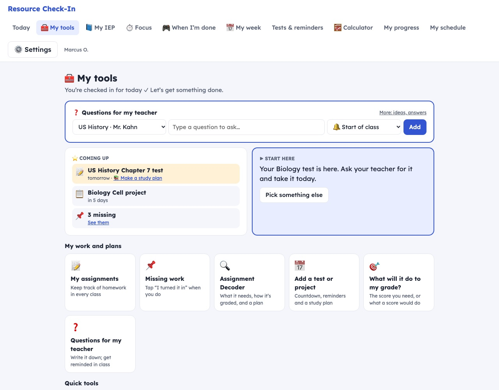
📘 My IEP, in plain words
Students see their own IEP: each goal in student words beside the IEP’s wording, the steps along the way, their accommodations and testing room, related services, their IEP team, the next meeting, and their rights. Every part has a “What does this mean?”
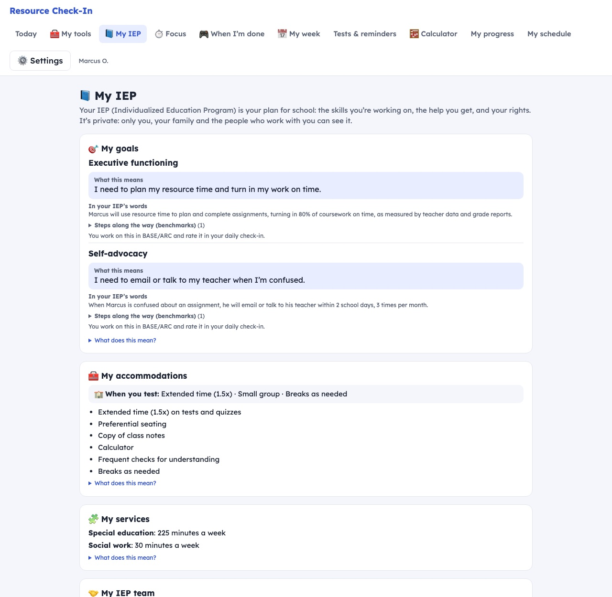
Grade check day
Once a week, on the day the teacher picks, the check-in opens with every class. Students paste each class’s detailed Grades page from Infinite Campus: the app reads the grade, missing work and late work. Typing a grade, or pasting the one-line summary page, isn’t allowed. Nothing else opens until every class is done.
- Students who already entered every grade earlier that week skip it
- The school calendar is built in: no school on Friday moves it to Thursday, and there’s none in a finals week
- Grades can still be entered on any day

“I have nothing to work on”
Instead of an empty plan, students go through a short list of things to check, one at a time, in order: missing work, Canvas, upcoming tests, retakes, working ahead, notes, asking a teacher.
The plan box stays open the whole time, so when the list jogs their memory they write the real plan. Only after the last item can they save “nothing to work on.”

Which tests can I retake?
Students paste one class’s detailed Grades page. The app reads every assignment and applies the school’s retake rule: at least 75% of that unit’s coursework turned in on time.
- Tests under 80% get a clear “schedule your retake” or “too bad you didn’t submit your coursework on time”
- Missing work, with what full credit would do to the grade
- A weekly reminder until every class is done
- Pasted the wrong page? “Paste again” replaces it

My week
Everything with a date in the next two weeks, day by day: tests, project steps, retakes, reminders, finals and the IEP meeting. Overdue steps sit on top.

Project planner
Students paste a project’s directions and rubric. The app pulls out each requirement and rubric row and spreads them across the school days until it’s due, with a final rubric check. They adjust the dates and get a reminder before each step.

Semester grade goals
A goal for every class, with “on track” or points to go. Students can change a goal any time, but have to write why, and every change is kept with its date.

My calendar
A wall calendar for any month, with what the student did written on each day: their plan, their exit ticket, the checklist, focus time, accommodations, grades checked and tests. No-school days are marked.
Students make their own; the teacher (and the case manager) can make anyone’s. It prints on one landscape page.

A dashboard for the class period
Everything a student needs during resource is on one screen, so the app can stay open all period.
- A 🧮 calculator for algebra: parentheses, exponents, square roots, π, sin/cos/tan, log and more, with the right order of operations
- The bell schedule countdown in the corner, so they always know how much time is left
- A just-for-fun question of the day to start the period
- “I’m waiting for a test” and “I have a test in the folder” buttons, and access codes that appear when the teacher releases them
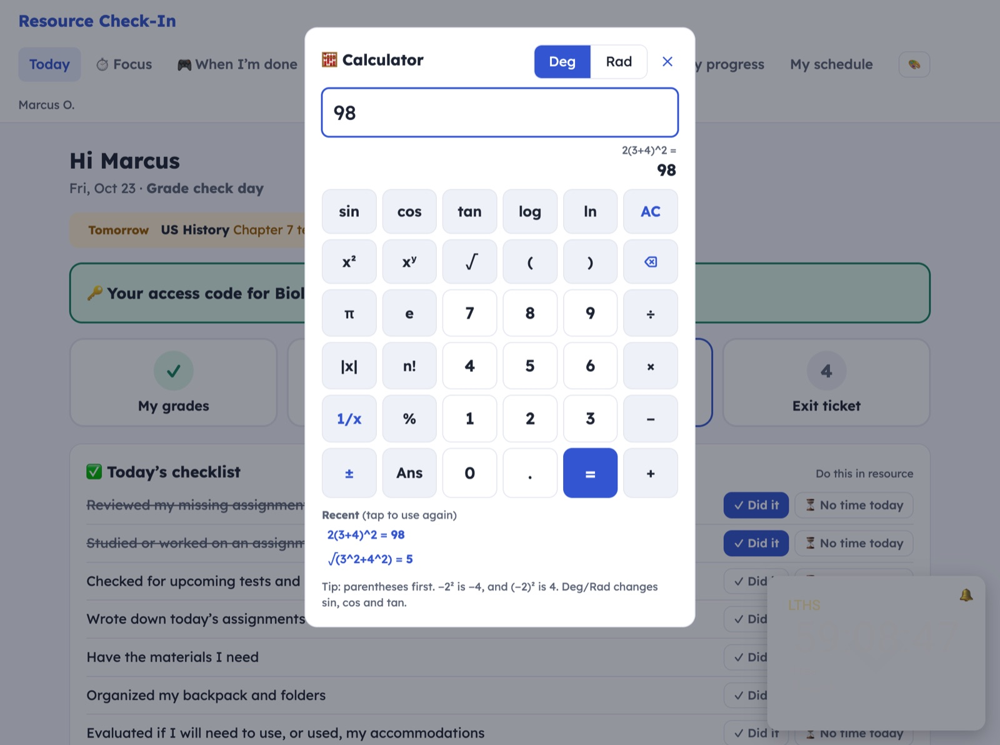
What the teacher sees
The Overview
Every student on one page, with what needs attention marked by color.
- Red only for an F or a class needed to graduate, so red still means something
- Drops since last week outlined, with a small trend line for the semester
- Today’s plan for each student, and who never wrote one
- IEP meetings in the next 30 days

One student’s page
Today’s plan with a “didn’t follow it” button, the IEP date, the support team, semester goals and finals, grades the teacher can enter, schedule fixes, emails to class teachers, counselors and families (translated for families), and a full progress report as a PDF.

Paste the whole IEP
Open the IEP PDF, select all, copy, paste it in one box. The app finds the student and fills in the goals, benchmarks, accommodations, testing room and related services. Pasting a new IEP replaces the old one.
- Names become initials and dates of birth are removed before anything is saved
- Each goal keeps the IEP’s exact wording, its criterion and a student-words version
- A “To check” list shows what still needs a look, goal by goal
- No AI: nothing about a student leaves the teacher’s Google account
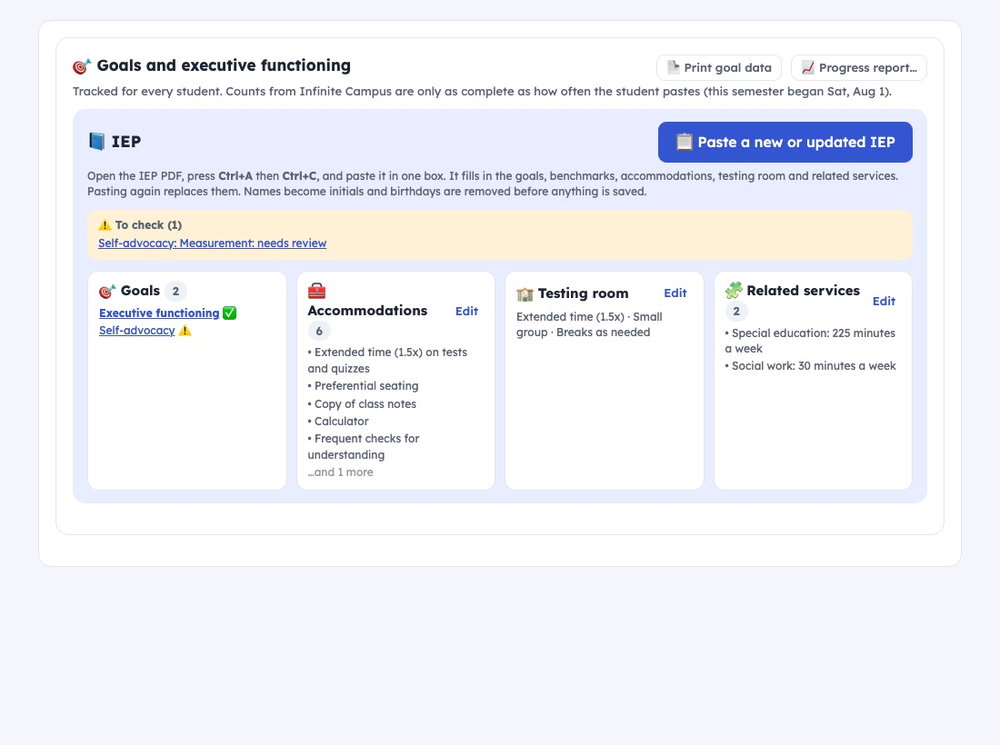
IEP goals and benchmarks
The teacher picks once how a goal is measured: things the app tracks by itself (coursework turned in, missing work, checklists, plans followed) and their own data (trials, percents, counts). Each benchmark sets a target in plain words, like “at least 80%” or “no more than 2 missing assignments.”
- Executive functioning data kept for every student, every week
- Self-reported missing work checked against the pasted pages automatically

Progress reports in one click
A full report for each student: grades, low-grade plans, tests and retakes, goals and executive functioning, IEP benchmarks, and goal changes with the student’s reasons. At progress report time, one button makes a PDF for every student.

Case managers, with the same link
When a case manager opens the app, they see only the students who picked them as their case manager. One tap shows a student’s full progress report, with Print / save PDF and the month calendar.
Nothing to set up: students choose their case manager on their first login.

Start small
Four roll-out stages turn features on in steps: Grades, then Planning, then Retakes, then Goals. Every feature also has its own switch.

Hall passes and attendance, for a room without a kiosk
A hall pass on every Chromebook
Students see how many passes are on the hook, who is out and for how long, and who is waiting. They pick where they’re going and leave; a small timer stays in the corner, so the Chromebook keeps working in the library. Coming back, they tap “I’m back” and hang the pass on the hook.
- Going where a classmate already is? It asks whether they’re sharing a pass
- No pass on the hook: get in line. If the pass ahead is very late, the student may go on a paper pass, and the teacher gets a pop-up with a chime
- Weekly limit reminders, escort-only students, and “Did you get a pass?” for the counselor
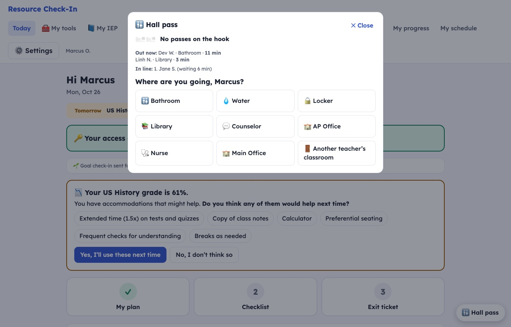
Who’s out, who’s here
The Overview shows everyone out right now with a running timer (red when it’s late) and an “I’m back” button, plus the line. Students tap 📍 I’m here when their period starts: on time until five minutes after the bell. A badge beside each name shows when they arrived, late, or not yet.
- Bell times follow the day’s schedule: late starts, assemblies and days off
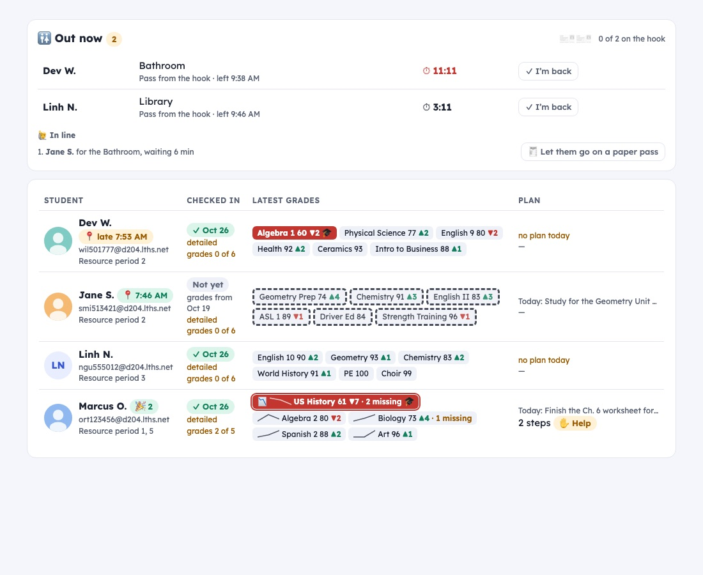
Helping the teacher stay organized
Test collection and tracking
Students tell the resource teacher when they’re waiting for a test or have one in the folder. The teacher logs every test picked up from the mailbox and every emailed access code, with the date and time it arrived.
An access code stays hidden until the teacher releases it, then appears in a green box at the top of the student’s page. One tap marks the test taken.
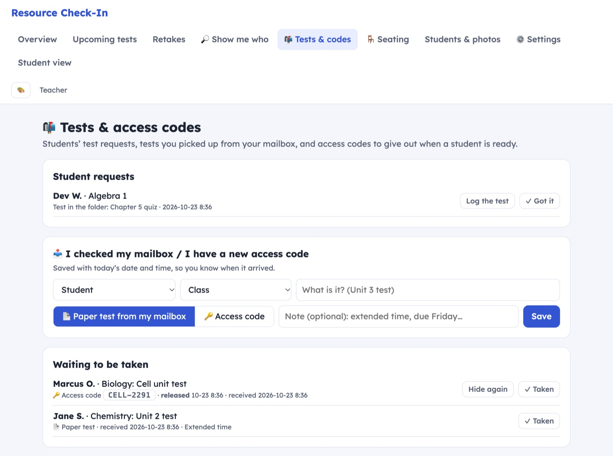
Finals accommodations, compiled for you
In their finals planner, students tap the accommodations they plan to use on each final. Extended time asks when (the school’s final exam periods appear as choices, with the student’s BASE/ARC period starred), an alternate setting asks where, and each one asks paper or Chromebook.
- Grouped by final exam period, in the order they happen: everything to plan for in that period, with totals (extended time, alternate setting, reader, paper, Chromebook)
- Each student’s name, class, accommodations and test style (paper or Chromebook); students using extra time in their BASE/ARC period show up there too
- Also sorted by exam time or by student; “not picked yet” shows who still needs to decide; one click prints it
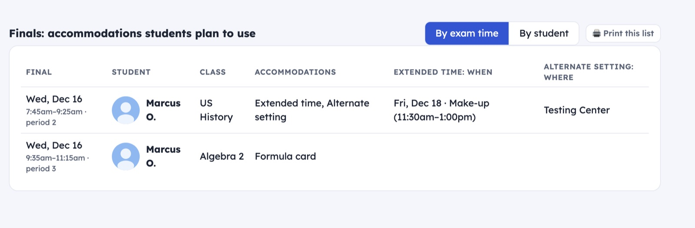
What the student sees
Each final shows its day and time from the school’s exam schedule, notes on what the teacher said it will cover, and the accommodations the student plans to use.